Spam dataset with ensemble methods#
import pandas as pd
import numpy as np
from matplotlib import pyplot as plt
import utils
from sklearn.tree import DecisionTreeClassifier
from sklearn import tree
np.random.seed(0)
The spam email dataset#
emails = np.array([
[7,8,1],
[3,2,0],
[8,4,1],
[2,6,0],
[6,5,1],
[9,6,1],
[8,5,0],
[7,1,0],
[1,9,1],
[4,7,0],
[1,3,0],
[3,10,1],
[2,2,1],
[9,3,0],
[5,3,0],
[10,1,0],
[5,9,1],
[10,8,1],
])
spam_dataset = pd.DataFrame(data=emails, columns=["Lottery", "Sale", "Spam"])
spam_dataset
| Lottery | Sale | Spam | |
|---|---|---|---|
| 0 | 7 | 8 | 1 |
| 1 | 3 | 2 | 0 |
| 2 | 8 | 4 | 1 |
| 3 | 2 | 6 | 0 |
| 4 | 6 | 5 | 1 |
| 5 | 9 | 6 | 1 |
| 6 | 8 | 5 | 0 |
| 7 | 7 | 1 | 0 |
| 8 | 1 | 9 | 1 |
| 9 | 4 | 7 | 0 |
| 10 | 1 | 3 | 0 |
| 11 | 3 | 10 | 1 |
| 12 | 2 | 2 | 1 |
| 13 | 9 | 3 | 0 |
| 14 | 5 | 3 | 0 |
| 15 | 10 | 1 | 0 |
| 16 | 5 | 9 | 1 |
| 17 | 10 | 8 | 1 |
features = spam_dataset[['Lottery', 'Sale']]
labels = spam_dataset['Spam']
utils.plot_points(features, labels)
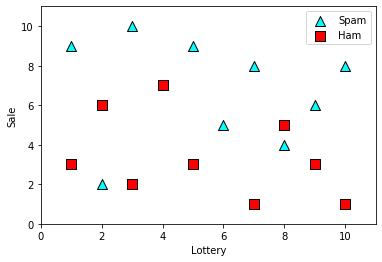
decision_tree_classifier = DecisionTreeClassifier(random_state=0)
decision_tree_classifier.fit(features, labels)
decision_tree_classifier.score(features, labels)
1.0
Training a decision tree#
utils.display_tree(decision_tree_classifier)
/Users/luisserrano/anaconda3/lib/python3.7/site-packages/sklearn/externals/six.py:31: FutureWarning: The module is deprecated in version 0.21 and will be removed in version 0.23 since we've dropped support for Python 2.7. Please rely on the official version of six (https://pypi.org/project/six/).
"(https://pypi.org/project/six/).", FutureWarning)
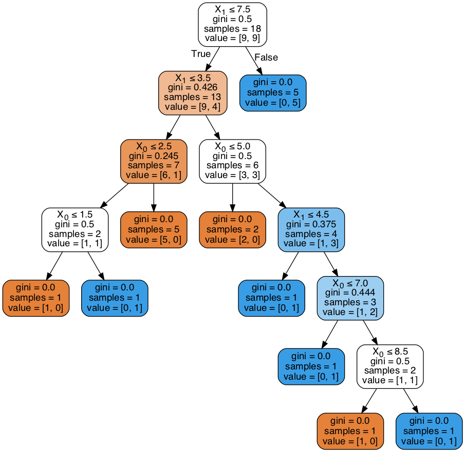
utils.plot_model(features, labels, decision_tree_classifier)
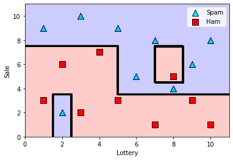
Training a random forest by hand#
first_batch = spam_dataset.loc[[0,1,2,3,4,5]]
features1 = first_batch[['Lottery', 'Sale']]
labels1 = first_batch['Spam']
utils.plot_points(features1, labels1)
plt.show()
second_batch = spam_dataset.loc[[6,7,8,9,10,11]]
features2 = second_batch[['Lottery', 'Sale']]
labels2 = second_batch['Spam']
utils.plot_points(features2, labels2)
plt.show()
third_batch = spam_dataset.loc[[12,13,14,15,16,17]]
features3 = third_batch[['Lottery', 'Sale']]
labels3 = third_batch['Spam']
utils.plot_points(features3, labels3)
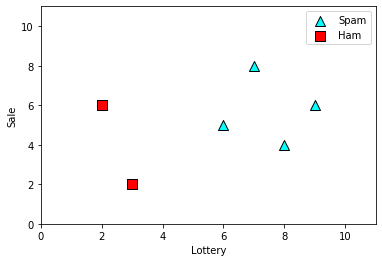
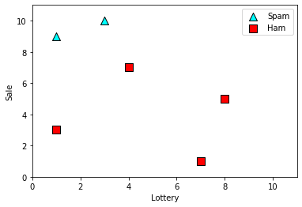
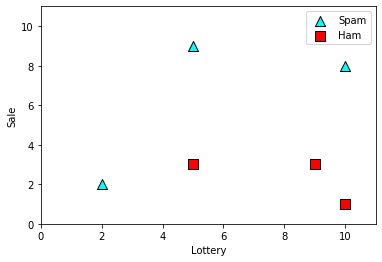
dt1 = DecisionTreeClassifier(random_state=0, max_depth=1)
dt1.fit(features1, labels1)
print("Weak learner 1 training accuracy:", dt1.score(features1, labels1))
tree.plot_tree(dt1, rounded=True)
plt.show()
utils.plot_model(features1, labels1, dt1)
dt2 = DecisionTreeClassifier(random_state=0, max_depth=1)
dt2.fit(features2, labels2)
print("Weak learner 2 training accuracy:", dt2.score(features2, labels2))
tree.plot_tree(dt2, rounded=True)
plt.show()
utils.plot_model(features2, labels2, dt2)
dt3 = DecisionTreeClassifier(random_state=0, max_depth=1)
dt3.fit(features3, labels3)
print("Weak learner 3 training accuracy:", dt3.score(features3, labels3))
tree.plot_tree(dt3, rounded=True)
plt.show()
utils.plot_model(features3, labels3, dt3)
Weak learner 1 training accuracy: 1.0
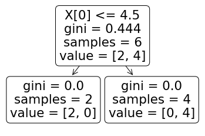
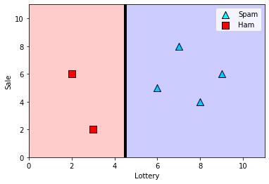
Weak learner 2 training accuracy: 1.0
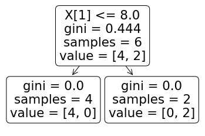
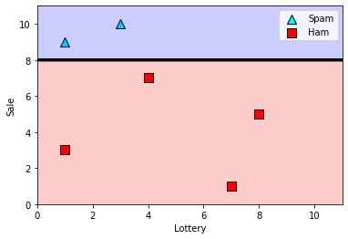
Weak learner 3 training accuracy: 0.8333333333333334
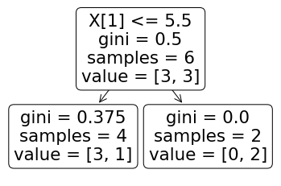
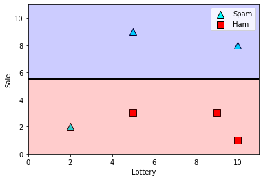
utils.display_tree(dt1)
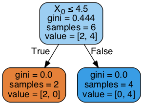
utils.display_tree(dt2)
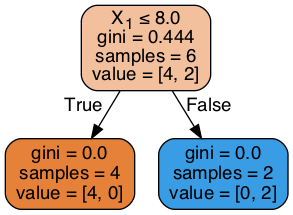
utils.display_tree(dt3)
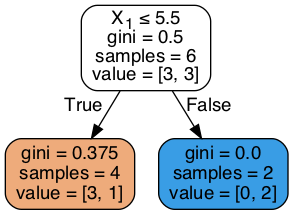
Training a random forest using sklearn#
from sklearn.ensemble import RandomForestClassifier
random_forest_classifier = RandomForestClassifier(random_state=0, n_estimators=5, max_depth=1)
random_forest_classifier.fit(features, labels)
random_forest_classifier.score(features, labels)
0.8333333333333334
utils.plot_model(features, labels, random_forest_classifier)
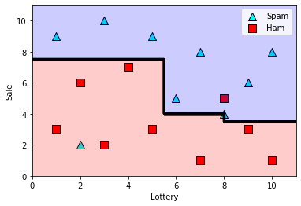
for dt in random_forest_classifier.estimators_:
print("*"*30, "Estimator", "*"*30)
tree.plot_tree(dt, rounded=True)
plt.show()
utils.plot_model(features, labels, dt)
plt.show()
****************************** Estimator ******************************
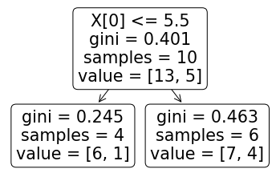
/Users/luisserrano/Documents/Book/code/manning/Chapter_12_Ensemble_Methods/utils.py:46: UserWarning: No contour levels were found within the data range.
pyplot.contour(xx, yy, Z,colors = 'k',linewidths = 3)
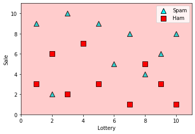
****************************** Estimator ******************************
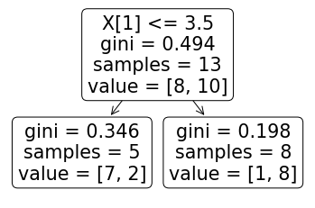
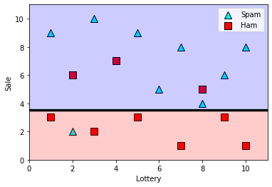
****************************** Estimator ******************************
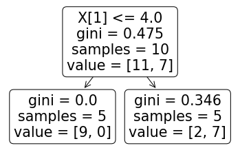
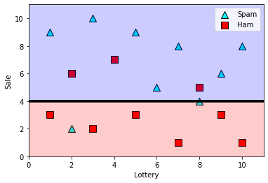
****************************** Estimator ******************************
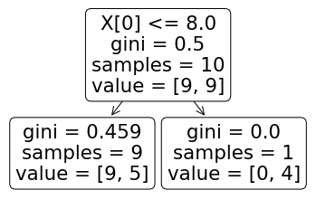
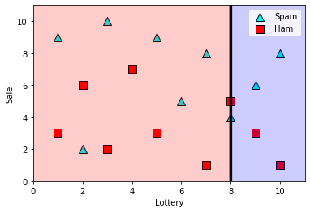
****************************** Estimator ******************************
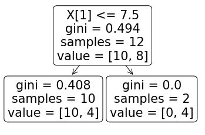
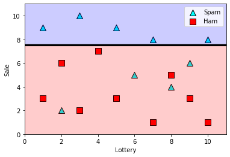
AdaBoost#
from sklearn.ensemble import AdaBoostClassifier
# Set the random_state so that we always get the same results
adaboost_classifier = AdaBoostClassifier(random_state=0, n_estimators=6)
adaboost_classifier.fit(features, labels)
adaboost_classifier.score(features, labels)
0.8888888888888888
utils.plot_model(features, labels, adaboost_classifier)
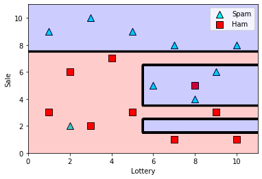
estimators = adaboost_classifier.estimators_
for estimator in estimators:
utils.plot_model(features, labels, estimator)
plt.show()
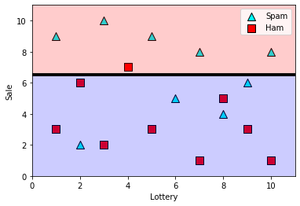
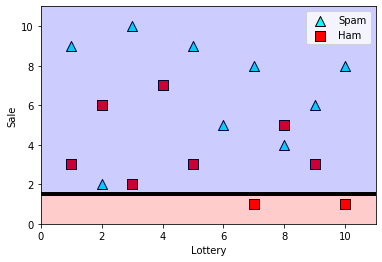
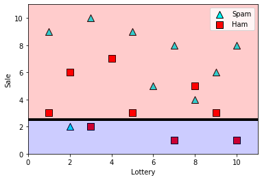
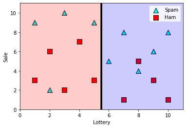
adaboost_classifier.estimator_weights_
array([1., 1., 1., 1., 1., 1.])
Gradient boosting#
from sklearn.ensemble import GradientBoostingClassifier
gradient_boosting_classifier = GradientBoostingClassifier(random_state=0, n_estimators=5)
gradient_boosting_classifier.fit(features, labels)
gradient_boosting_classifier.score(features, labels)
0.8888888888888888
utils.plot_model(features, labels, gradient_boosting_classifier)
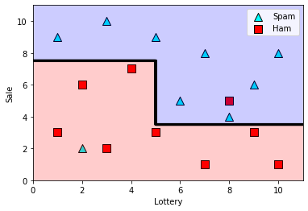
estimators = gradient_boosting_classifier.estimators_
As an example, let us plot the first of the estimators.
utils.display_tree(estimators[0][0])
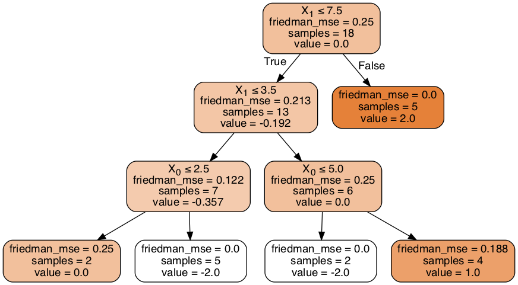
XGBoost#
import xgboost
from xgboost import XGBClassifier
xgboost_classifier = XGBClassifier(random_state=0, n_estimators=5)
xgboost_classifier.fit(np.array(features), labels)
xgboost_classifier.score(np.array(features), labels)
0.8888888888888888
utils.plot_model(features, labels, xgboost_classifier)
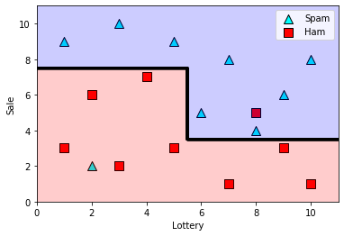